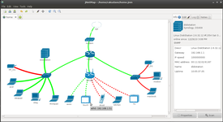
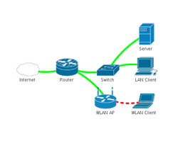

jNetMap
Dieser Artikel wurde für die folgenden Ubuntu-Versionen getestet:
Ubuntu 14.04 Trusty Tahr
Zum Verständnis dieses Artikels sind folgende Seiten hilfreich:
jNetMap  ist ein plattformübergreifendes Programm zur Dokumentation von Netzwerkstrukturen, insbesondere der Netzwerk-Topologie. Darüber hinaus kann anhand der erstellten Übersichtskarten die vorhandene Infrastruktur in regelmäßigen Abständen auf Erreichbarkeit geprüft werden. Diverse Erweiterungen (Plugins) erweitern die Funktionalität um Benachrichtigungsmechanismen oder Wartungszugänge.
ist ein plattformübergreifendes Programm zur Dokumentation von Netzwerkstrukturen, insbesondere der Netzwerk-Topologie. Darüber hinaus kann anhand der erstellten Übersichtskarten die vorhandene Infrastruktur in regelmäßigen Abständen auf Erreichbarkeit geprüft werden. Diverse Erweiterungen (Plugins) erweitern die Funktionalität um Benachrichtigungsmechanismen oder Wartungszugänge.
Trotz seiner Monitoring-Fähigkeit ist jNetMap aber nur begrenzt als Werkzeug zur Netzwerk-Analyse bzw. zum Netzwerk-Audit einsetzbar. Besser geeignete Programme sind im Artikel Netzwerk-Monitoring beschrieben.
|  |
| jNetMap |
Voraussetzungen¶
jNetMap basiert auf Java. Die Installation einer Laufzeit-Umgebung (JRE) in der Version 6 oder höher ist daher zwingend Voraussetzung zur Nutzung des Programms. Ab Version 0.5.3 wird Java 7 oder neuer benötigt.
Installation¶
Das Programm ist nicht in den Paketquellen enthalten (486885).
Fremdpaket¶
Über die Downloadseite  kann ein Fremdpaket heruntergeladen und manuell installiert [1] werden. Auch GetDeb stellt ein Fremdpaket zur Verfügung.
kann ein Fremdpaket heruntergeladen und manuell installiert [1] werden. Auch GetDeb stellt ein Fremdpaket zur Verfügung.
Hinweis!
Fremdpakete können das System gefährden.
Manuell¶
Über die oben genannte Downloadseite kann auch eine .jar-Datei ("Others") heruntergeladen werden. Diese lässt sich direkt starten [2]:
java -jar jNetMap-0.x.y.jar
Einen Programmstarter [3] muss man bei Bedarf selbst erstellen. Beispiel (Benutzername, Pfade und Dateinamen anpassen!):
[Desktop Entry] Encoding=UTF-8 Name=jNetMap Comment=Netzwerk-Dokumentation und -Monitoring Exec=java -jar /home/BENUTZERNAME/bin/jNetMap-0.x.y.jar Icon=/home/BENUTZERNAME/Bilder/icons/jnetmap_logo.png Terminal=false Type=Application Categories=Network; StartupNotify=false
Verwendung¶
 Nach der Installation ist das Programm bei Ubuntu-Varianten mit einem Anwendungsmenü unter "Internet -> jNetMap" zu finden. Die allgemeine Vorgehensweise:
"Neue Karte erstellen"
Netzwerk scannen mit "Werkzeuge -> Netzwerkscanner"
Karte nach Bedarf ändern, ergänzen usw.
Karte speichern
Karte bei Bedarf als Bild exportieren (so kann man eine Karte auch drucken)
Geräte¶
Prinzipiell wird zwischen Geräten (devices) und Verbindungen (connections) unterschieden. Über die rechte Maustaste  bzw. das Kontextmenü lassen sich die Eigenschaften eines markierten Geräts bearbeiten oder ein neues Gerät hinzufügen.
bzw. das Kontextmenü lassen sich die Eigenschaften eines markierten Geräts bearbeiten oder ein neues Gerät hinzufügen.
Geräte können mehrere Schnittstellen (interfaces) besitzen, die man verschiedenen Verbindungen zuordnen kann.

Verbindungen¶
Im Gegensatz zu reinen Diagrammen, die sich z.B. mit Dia erstellen lassen, sind Verbindungen in jNetMap "interaktiv", d.h. sie können ihren Zustand farblich wiedergeben:
grün - Gerät online
rot - Gerät offline
gelb - Gerät nicht vorhanden
grau - unbekannt
Zum (nachträglichen) Hinzufügen einer Verbindung wechselt man vom Auswahlmodus in den Bearbeitungsmodus . Erst jetzt kann man eine Verbindung zwischen zwei Geräten erstellen. Zur Kontrolle der Verbindung dienen weitere Parameter wie Verbindungstyp, IP-Konfiguration, MAC-Adressen der beteiligten Netzwerkkarten etc.
Hinweis:
Die Anzeige des Verbindungs-Status funktioniert nicht immer zuverlässig. So werden beispielsweise Verbindungen zu Geräten außerhalb des eigenen Netzwerks als grün markiert, obwohl sie nicht aus dem LAN zu erreichen sind. Dies gilt auch für Verbindungen zu Geräten wie z.B. Druckern, die gar keine Netzwerkschnittstelle besitzen.
Karten¶
Alle Informationen lassen sich gemeinsam als Karte im speziellen Format .jnm speichern. Da die Programmoberfläche mit Reitern (Tabs) arbeitet, lassen sich auch mehrere Karten öffnen bzw. bearbeiten. Über "Datei -> Eigenschaften" stellt man das Aktualisierungsintervall der Verbindungen und eine evtl. Status-Benachrichtigung (siehe Benachrichtigungs-Plugins) ein. Auf Wunsch lässt sich der aktuelle Zustand auch als Bild im PNG-Format exportieren.
Konfiguration¶
 Die Konfiguration des Programms ist über "Bearbeiten -> Einstellungen" ("Edit -> Preferences") oder die ungewöhnliche Tastenkombination
Strg +
P zugänglich. Dazu zählen beispielsweise die Spracheinstellungen, das Aussehen der Benutzeroberfläche, der Linien-Stil der Verbindungen und die Verwaltung der Erweiterungen. Manche Einstellungen erfordern einen Neustart des Programms, damit sie wirksam werden.
Die Konfiguration des Programms ist über "Bearbeiten -> Einstellungen" ("Edit -> Preferences") oder die ungewöhnliche Tastenkombination
Strg +
P zugänglich. Dazu zählen beispielsweise die Spracheinstellungen, das Aussehen der Benutzeroberfläche, der Linien-Stil der Verbindungen und die Verwaltung der Erweiterungen. Manche Einstellungen erfordern einen Neustart des Programms, damit sie wirksam werden.
Konfigurationsdaten werden im Ordner ~/.jNetMap/ im Homeverzeichnis gespeichert. In diesem Verzeichnis befindet sich auch die engl. Bedienungsanleitung guide.pdf, die sich innerhalb des Programms über "Hilfe -> Dokumentation" aufrufen lässt.
Erweiterungen¶
Folgende Erweiterungen sind vorhanden und (mit Ausnahme von Wireshark) bereits in das Programm integriert:
Plugins für das Kontextmenü (
):"RDP" - öffnet eine Verbindung via RDP (Remote Desktop Protokoll) zum markierten Gerät
"MetaVNC" - öffnet eine Verbindung via VNC zum markierten Gerät
"SSH" - öffnet eine Verbindung via SSH zum markierten Gerät
"Open Browser" - öffnet ein Webbrowser-Verbindung (Port
80) zum markierten Gerät"Wake On LAN" - sendet ein Magic Packet an ein Gerät, um dieses aufzuwecken (falls kompatibel). Benötigt eine MAC-Adresse und eine Subnetz-Maske für die Schnittstelle (siehe auch Wake on LAN).
"Wireshark" - startet Wireshark mit einem Filter zum Mitschnitt von Geräte-Informationen. Unix/Linux-Benutzer sollten beachten, dass jNetMap dazu mit Root-Rechten [4] gestartet werden muss (nicht vorinstalliert!).
Benachrichtigungs-Plugins:
"Mail Notifier" - verschickt bei Status-Änderung (online/offline) eine E-Mail
"Script Notifier" - führt bei Status-Änderung (online/offline) ein Skript aus
"Logfile Notifier" - schreibt ein Logbuch zum Status (online/offline) in eine Datei
"Ubuntu Notifiy" - verwendet den Benachrichtigungsdienst zur Status-Anzeige (online/offline). Benötigt das Paket
libnotify-bin (bis Ubuntu 11.04 in universe)
 mit apturl
mit apturl
Paketliste zum Kopieren:
sudo apt-get install libnotify-bin
sudo aptitude install libnotify-bin
"Sound Notifier" - spielt bei Status-Änderung (online/offline) eine Audiodatei ab
"IRC Notifier" - verwendet PircBot
, um Meldungen an einen IRC-Channel zu senden
Sidebar Plugins:
"Notizen Panel" - Notizen zu einzelnen Geräten anlegen
"Log Panel" - Logbuch-Einträge im der Sidebar anzeigen
Netzwerksymbole¶
Die im Programm enthaltenen Netzwerksymbole befinden sich im Ordner ~/.jNetMap/cisco/ und können auch ausgetauscht werden, wenn man den Dateinamen und das Bildformat beibehält. Allerdings sind die enthaltenen Symbole aufgrund der freizügigen Lizenz der Fa. Cisco weit verbreitet und ein Quasi-Standard.
Problembehandlung¶
Beim Fremdpaket in der Version 0.5.2 von der Downloadseite lässt sich jNetMap nicht starten, da die Zugriffsrechte nicht stimmen. Lösen kann man das Problem mit dem Befehl [4]:
sudo chmod 755 /usr/share/jnetmap
Links¶
Netzwerk-Überwachung und -Dokumentation mit jNetMap
 - Blogbeitrag 06/2011
- Blogbeitrag 06/2011Symbole:
Cisco Network Topology Icons
- bereits enthaltenLizenzbedingungen
zur Verwendung der Symbole
gnomeDIAicons
- einige wenige, aber gut aussehende Netzwerksymbole
- Erstellt mit Inyoka
-
 2004 – 2017 ubuntuusers.de • Einige Rechte vorbehalten
2004 – 2017 ubuntuusers.de • Einige Rechte vorbehalten
Lizenz • Kontakt • Datenschutz • Impressum • Serverstatus -
Serverhousing gespendet von